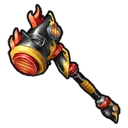

Martelo Contra-ataque
Maça · Tier 14 · Nível 43
Este martelo flamejante, movido a foguete, tem a mesma probabilidade de queimar tanto seu portador quanto seu alvo. Bagginbak considerava isso uma pequena inconveniência.
Atributos
Ataque
1.200
Vida
38
Economia
Valor
14.200.000
Tempo de fabricação
2d 11h
XP do comerciante
290.000
Trabalhadores: Carpinteiro 37, Sacerdotisa 33, Ferreiro 30
Receita


Marcos do projeto
4
Tempo de fabricação -25%
10
-85 Ferro
18
Valor +25%
25
-30 Aço
40
Chance de qualidade +1